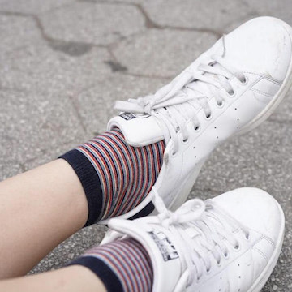

Click here to change to grey mode!
My name is Julia McNeill, and I'm currently student at New York University, studying Art History, Marketing, and Web Development. I'm based in New York, but have lived in Florence and London in the past year.
You can usually find me exploring the city, visiting art museums and galleries with friends, making playlists, rating every film i watch, doing crossword and logic puzzles, studying the photographs in National Geographic, and spending sleepless nights on my laptop.
I currently shoot with a Canon EOS 6 and Canon AE-1.
Click here to see my photography website.
